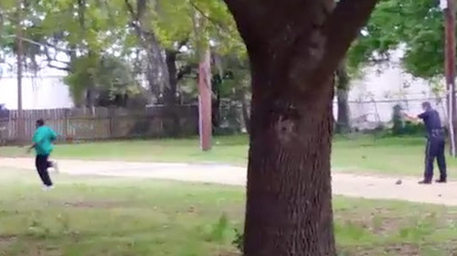

South Carolina Officer Gets Murder Charge in Man’s Death
By MICHAEL S. SCHMIDT and MATT APUZZO
A white police officer in North Charleston, S.C., has been charged with murder after a video surfaced showing him shooting and killing an apparently unarmed black man while he fled.

FATAL POLICE SHOOTING: "In a video provided to The New York Times,a police officer in North Charleston, S.C., is seen shooting an apparently unarmed man after a scuffle following a traffic stop.
 SEARCH
SEARCH